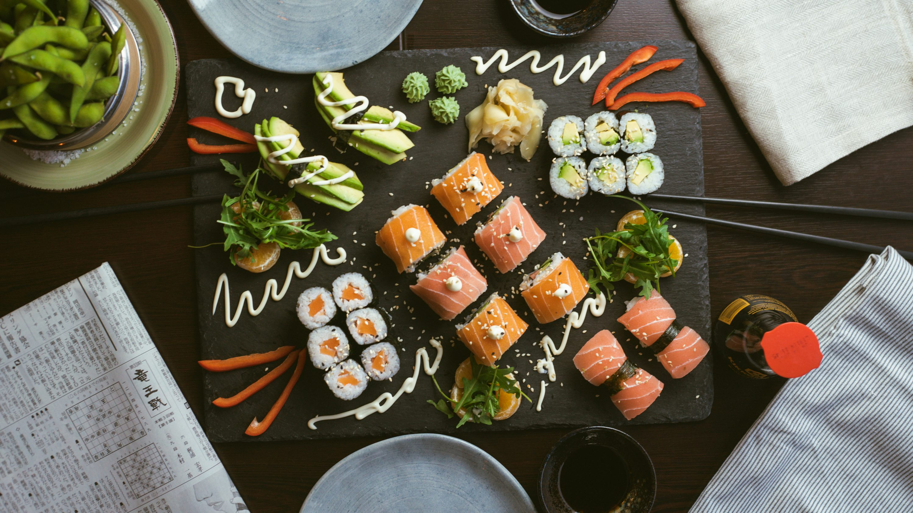

In the bustling streets of 19th-century Edo (now Tokyo), hungry workers needed a quick, flavorful meal that could be eaten on the go. From this simple need, sushi — now one of the world’s most celebrated cuisines — was born. But how did this humble street snack evolve into a global phenomenon, served in Michelin-starred restaurants and adored by millions across continents? Let’s trace the incredible journey of sushi — from wooden stalls in Japan to elegant counters in New York, London, and beyond.
The Humble Beginnings in Edo Japan
During the Edo period (1603–1868), Japan was experiencing rapid urbanization. Tokyo’s fish markets were overflowing with fresh catch, and rice, a staple food, was abundant. Food vendors started experimenting with ways to preserve fish using vinegar and rice. This practice evolved into nigiri-zushi — a small hand-pressed mound of vinegared rice topped with a slice of fresh fish.
Back then, sushi wasn’t the luxury item it is today — it was fast food for the masses. People would stop by stalls after work, enjoying a quick bite before heading home. Sushi chefs in that era were like today’s street vendors: quick, efficient, and deeply proud of their craft.
This dedication to craftsmanship still thrives today — a topic beautifully explored in The Art of Sushi: How Japanese Chefs Turn Fish into Masterpieces. The principle of shokunin (mastery through perfection) is what connects those early Edo vendors to modern-day sushi masters.
A Symbol of Precision and Purity
üêü A Symbol of Precision and Purity Sushi may seem simple, but every detail ‚Äî from the texture of the rice to the sharpness of the knife ‚Äî reflects deep precision. Even in its early days, Edo sushi makers used only the freshest fish, balancing flavors with vinegar, soy, and wasabi. This focus on purity and simplicity continues today, especially in authentic sushi spots across Japan ‚Äî many of which you can discover in Top 10 Sushi Experiences You Must Try in Japan.
As Japan opened its doors to the world in the late 19th century, foreigners were fascinated by the meticulous preparation and minimalist presentation of sushi. What was once a local delicacy was slowly becoming a cultural export.
After World War II, as Japan rebuilt and modernized, its cuisine began to attract global attention. By the 1960s, Japanese immigrants and travelers brought sushi to cities like Los Angeles, San Francisco, and Honolulu. At first, Western diners were hesitant about eating raw fish — it was unfamiliar, even intimidating. But that changed when chefs adapted sushi for local tastes. The invention of the California Roll — a maki roll with avocado, crab, and cucumber — was a turning point. It introduced sushi in a familiar, less intimidating way.
From there, sushi’s rise was unstoppable. High-end restaurants, conveyor belt sushi bars (kaiten-zushi), and supermarket sushi all became part of daily life around the world. Today, you can find sushi in almost every major city, from Paris to São Paulo.
Preserving Authenticity in a Changing World
Despite its global fame, Japan has been careful to protect the heart and soul of sushi. The balance between tradition and innovation is delicate — and Japan takes it seriously. Modern sushi chefs experiment with new ingredients and techniques but never forget their roots. If you’re curious about how unique ingredients still define authentic sushi, check out Beyond Tuna and Salmon: Rare Sushi Ingredients Found Only in Japan. It’s a fascinating glimpse into Japan’s regional fish varieties and the flavors that still define true sushi culture.
“Sushi isn’t just food — it’s a quiet dialogue between the chef, the ingredients, and the seasons of Japan. Every bite tells a story of harmony, respect, and craftsmanship.”
From Hand to Mouth: The Etiquette Remains
While sushi may have become global, the etiquette of eating it still reflects deep respect for Japanese culture. From using hands instead of chopsticks for nigiri, to knowing how much soy sauce to use — there’s a subtle art to enjoying sushi properly. To truly understand this side of sushi culture, you’ll want to read Sushi Etiquette 101: How to Eat Sushi Like a Local. These small gestures not only enhance the experience but also honor the chef’s hard work and dedication.
Use Ginger the Right Way
Today’s sushi world is vast and vibrant. From minimalist Tokyo counters with only six seats to creative fusion sushi in Los Angeles, the possibilities are endless. In Japan, many sushi lovers are now rediscovering local gems — intimate, family-run sushi shops that have preserved their unique recipes for generations. These hidden treasures are celebrated in Hidden Sushi Gems: Local Spots Only Japanese Locals Know About, where tradition lives quietly in the heart of small towns and coastal villages.


The Timeless Balance of Tradition and Change
The story of sushi mirrors Japan itself — a country that blends the old and new with grace. Whether it’s the centuries-old knife techniques of Tokyo’s sushi masters or the creative experiments of young chefs abroad, sushi continues to embody the Japanese spirit of precision, respect, and evolution. It’s not just food; it’s art, philosophy, and heritage — wrapped neatly in rice and seaweed. So the next time you enjoy a perfect piece of nigiri, take a moment to remember the journey it has traveled — from a bustling Edo street corner to your plate. Every bite carries centuries of history, culture, and craftsmanship.
Final Thoughts
Sushi’s evolution is proof that the simplest things can hold the deepest meaning. From its humble origins to its international fame, it continues to unite people across borders — all through the universal language of flavor and respect.
Whether you’re exploring the refined techniques of The Art of Sushi, uncovering Hidden Sushi Gems, or learning the proper Sushi Etiquette, each story adds another layer to the beautiful mosaic of Japanese cuisine.